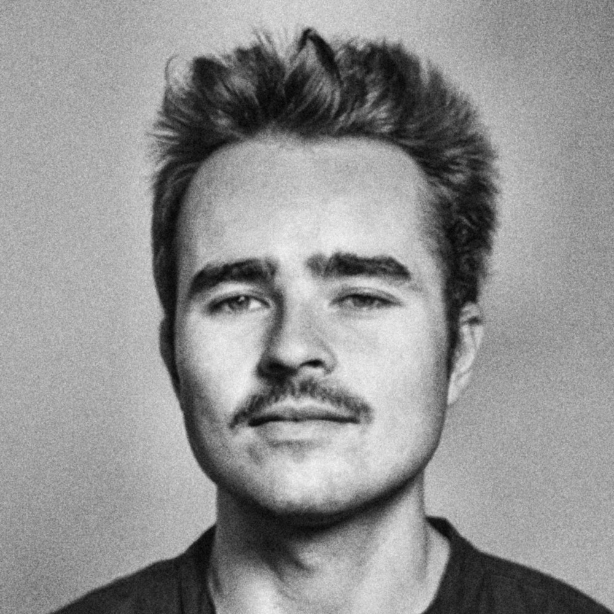

Contacto
Con base en Cantabria · Disponible para trasladarme

Iyán Rojo Greciet
Fotógrafo, realizador y profesional de la comunicación.
- Comunicación Audiovisual, Universidad Carlos III de Madrid
- Máster en Realización de Cine Documental, ESCAC, Barcelona
- Máster en Formación del Profesorado, Universidad de Cantabria
- Diploma en Cooperación Internacional para el Desarrollo, OEI
- Español · Inglés C1 · Francés C1 · Portugués B2
Prensa
Servicios
- Producción y grabación de vídeoCampañas, documentales y piezas audiovisuales para marcas, ONG e instituciones, desde la idea y el guion hasta el rodaje y el montaje.
- Fotografía analógica35 mm y medio formato, en blanco y negro y en color: retratos, series documentales y encargos.
- Copy y comunicaciónConceptos de campaña, guiones y redes sociales para causas sociales y entidades.
- Copias de autorCopias de mis fotografías, numeradas y bajo pedido.
Con base en Cantabria. Me desplazo donde lo pida el proyecto.